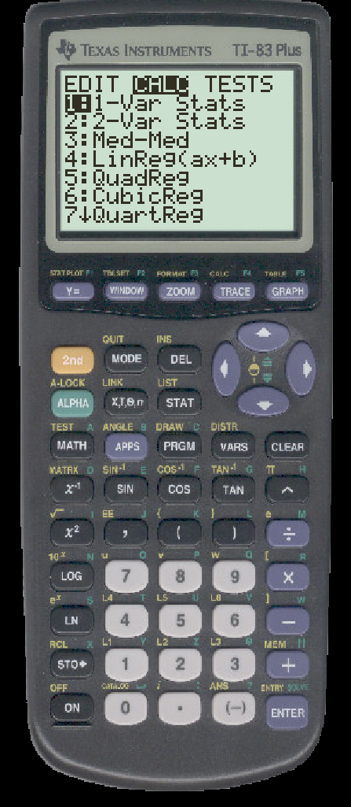
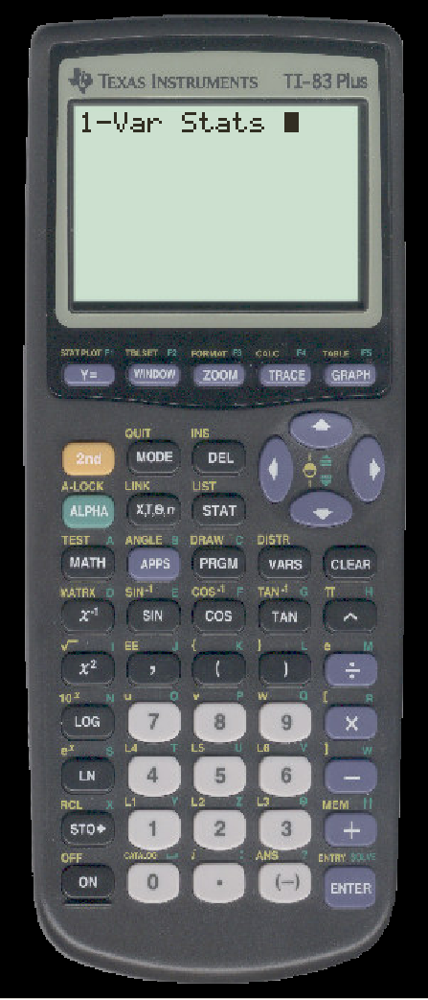
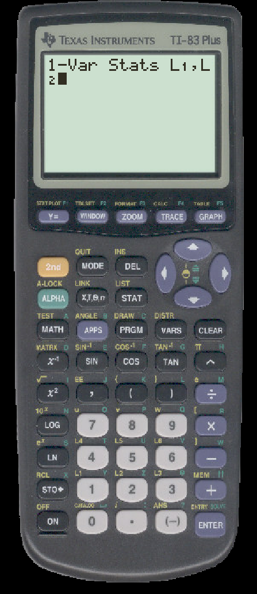
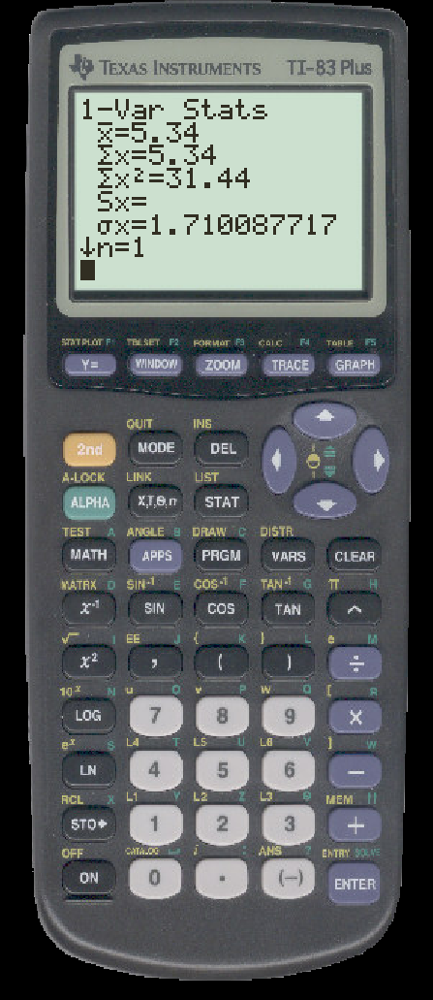

TO CALCULATE SUMMARY STATISTICS FOR A RANDOM VARIABLE ON THE TI
- Enter the possible values for your random variable in one list and the corresponding probabilities in another.
We will use L1 and L2.
- Press STAT, then the rightarrow $\rightarrow$. You should see

- Press ENTER to select ``1-Var Stats''

- Type the name of the list in which you entered the values of your random variable and the name of the list in which you entered your probabilities separated by a comma.

- Press ENTER. You will see:
